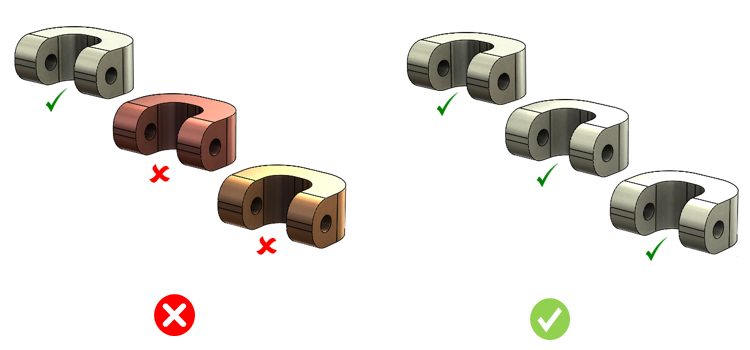

このルールは、CADパーツファイルに割り当てられている材料を確認し、その材料が推奨材料か非推奨材料かをチェックします。
推奨材料は入手性が高く、コストも低い材料です。多くの場合、設計者が誤って、業界ではすでに使用されていない材料をパーツに割り当ててしまうことがあります。非推奨材料は、設計変更、生産プロセスの変更、製品ラインの変更など、さまざまな理由により、組織にとって有用ではありません。
設計者は、より耐食性に優れた最終製品を得るために、パーツに推奨材料を割り当てるべきです。多くのケースでは、非推奨材料は溶接工程中に焼損してしまうことがあります。
一般的な運用として、設計者はルール構成ダイアログボックスで設定された標準の推奨材料をパーツに割り当てるべきです。
利用可能な材料リストに基づいて、ユーザーは推奨材料または非推奨材料のいずれかを構成できます。このツールは柔軟性を備えており、設計者が推奨材料と非推奨材料の両方を構成できるようになっています。
構成を行うには、（下図の）［推奨材料］タブをクリックして材料を選択します。選択した材料は推奨材料リストに追加されます。同様に、非推奨材料も追加します。
図1
上記に記載されていないパーツ材料を無視 チェックボックスは、パーツおよびアセンブリの両方に適用されます。このチェックボックスは、パーツ数が多いアセンブリにおいて特に有効です。ルール検証時に、このチェックボックスを有効にすると、パーツ材料が推奨材料リストと非推奨材料リストの両方に設定されていないことを保証し、エラーとして報告されないようにします。

注記:
このルールは、アセンブリレベルの解析でもサポートされています。
このルールは、DFMPro設定に基づき、トップレベルのアセンブリパーツに対して実行できます。